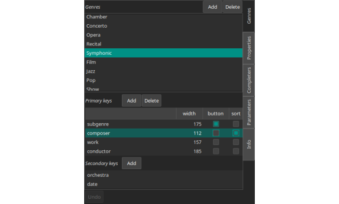
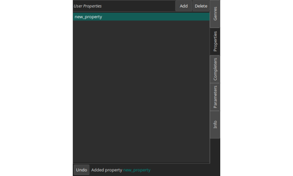
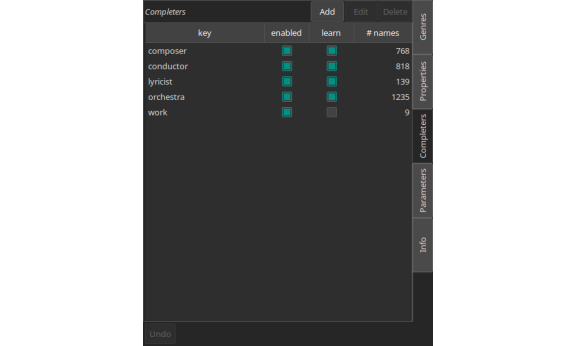
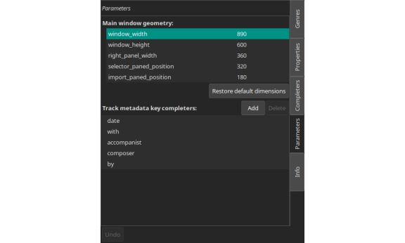
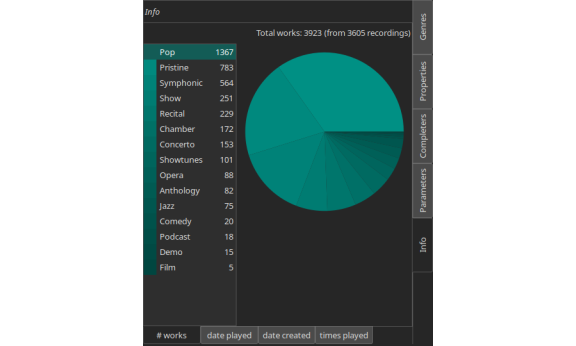

WaxConfig¶
WaxConfig is a separate program for configuring Wax. It makes it possible to create, modify, or delete genres, properties, completers, or geometry. It also provides information about your collection including a count of works in your collection broken down by genre, a list of the 50 works most recently played, and a list of the 50 most frequently played works.
When you use WaxConfig to make changes to your database configuration, WaxConfig provides a description at the bottom of the window of the most recent change.
WaxConfig keeps checkpoints of the configuration so that you can undo changes by clicking the Undo button. The checkpoints survive when you exit WaxConfig. However, the next time you start WaxConfig, all checkpoints get deleted unless you specify the -p option (preserve) on the command line.
You are not permitted to run waxconfig at the same time as wax because otherwise any changes that you make in one will not propagate to the other.
Genres¶
Use the Add button to add a genre. It will have a default name (New_genre). Click on it to change the name. When you click on a genre, the Delete button at the top becomes sensitive. Use it to delete a genre (and all of its associated data). Undoing genre deletion will restore the genre specification, but not the data, so be sure that you really intend this outcome.
When you select a genre, additional panels appear that allow you to change the genre specification. There are Add buttons for adding either a primary or secondary key. When you select a key, a Delete button appears for deleting the key. You can drag keys to specify the order in which they appear in Play mode. You can also drag a key from primary to secondary to demote it or from secondary to primary to promote it. For each key, you can specify the width of its column, whether the values appear in a column or a filter button, and whether sort is based on the values in the column for the corresponding key.
Note that if you delete a key, you do not lose the corresponding value. The key/value pair simply appears as nonce instead of permanent primary or secondary metadata. If you demote primary metadata, its long form appears survives as secondary metadata. If you promote secondary metadata, Wax uses the last name as the short form.
Properties¶
Use the Add or Delete buttons at the top to add or delete user properties. When you delete a user property, the corresponding value is lost from every work in your collection.
Completers¶
Use the Add or Delete buttons at the top to add or delete a completer. The Edit button opens the completer file in an editor so that you can edit the file. You might want to remove a name if you mistakenly told Wax to learn it. Also, if the completers file gets so big that completion has become sluggish, you could edit the file to remove names that you do not really need.
You can turn off completion for a key by unchecking the box in the “enabled” column. If you do not want Wax to learn new values, uncheck the box in the “learn” column. Whenever Wax encounters a new name, it asks whether you want it to learn the name. The popup that presents this option also allows you to turn off learning for that key. If you later decide that you would like to turn learning back on, you can do that here. The final column tells you how many names are in the completers file.
Parameters¶
Adjust the geometry of the Wax window by changing values here. Use the “Restore default dimensions” button if you are not happy with the changes and want to get back to the original settings.
It is also possible to make changes to the list of completers for secondary track metadata keys. You can add or delete keys, and you can rename them.
Info¶
There are three sub-pages on the Info page.
# works provides information about the composition of your collection as a list and as a pie chart.
date played presents a list of the 50 most recently played works.
date created presents a list of the 50 most recently created works.
times played presents a list of the 50 most frequently played works.